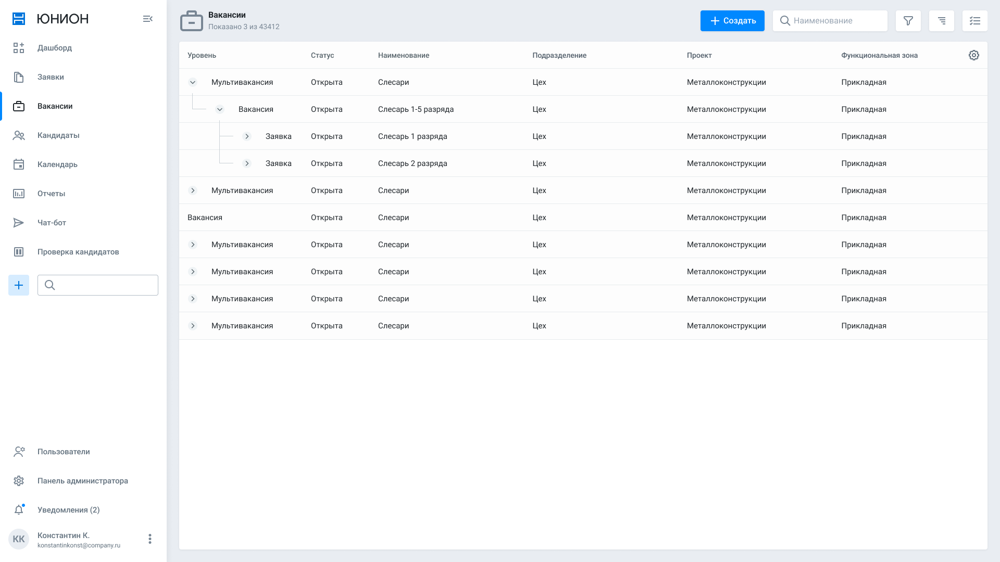
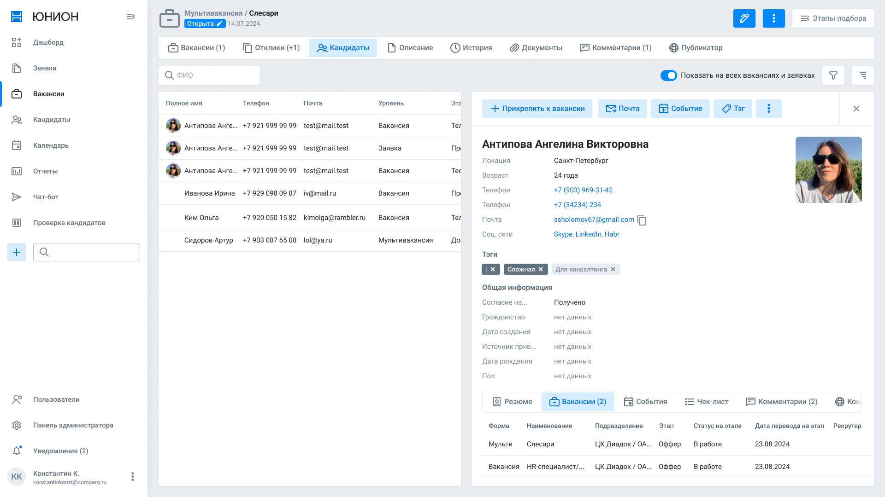
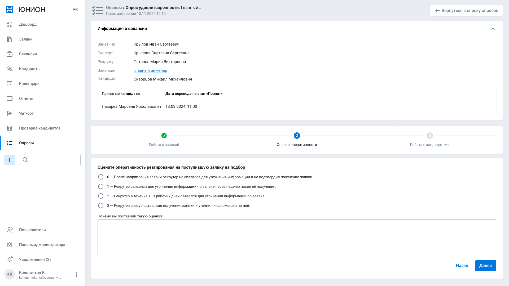

Михаил Скворцов.
Дизайнер интерфейсов с любовью к структуре и системному подходу. Проектирую B2B и B2C-продукты — соединяю выверенный UX с глубокой работой над дизайн-системами и процессами в команде.
15+ лет в продуктовом дизайне. Сейчас руковожу отделом проектирования в НОТА (Группа Т1). Связаться можно в Telegram, по телефону +7 981 822 32 44 или на saartrr@gmail.com.
Опыт работы
- Руководитель отдела проектирования,
- Ведущий дизайнер,
- Senior UX/UI Designer,
- Lead UX/UI Designer,
- Lead UX/UI Designer,
- Product Designer,
- Фриланс и проектная работа,
Избранные проекты
-
DION — платформа корпоративных коммуникацийУнифицированная платформа коммуникаций холдинга Т1: видеоконференции до 10 000 участников, корпоративный мессенджер, бронирование переговорных, видеохостинг, звонки. Работал над дизайн-системой продукта и ключевыми сценариями ВКС, чатов и DION.Rooms — от десктоп- и веб-клиентов до мобильных приложений. Фокус на стабильности интерфейса при слабых каналах связи, простоте onboarding и соответствии корпоративным требованиям к безопасности (on-prem, SSO, DLP).10K+ участников ВКС3 платформы2023 — наст. · Т1 · НОТА
-
Редизайн HRM-платформы НОТА ЮнионТрансформация существующей версии под актуальные запросы рынка. Полностью завершил редизайн на базе новой дизайн-системы, внедрил Storybook с актуальной библиотекой компонентов из Figma — это убрало энтропию между дизайном и разработкой и сократило время разработки. Прототипы и тестирования на фокус-группах для валидации решений. Вывели продукт на конкурентный уровень среди ведущих ATS-систем РФ.+42% скорость задач+68 NPS2022 — 2023 · Иннотех






-
Дизайн-система вендора НОТАОбщая дизайн-система для нескольких B2C-продуктов вендора — nota.tech, diongo.ru (корпоративные коммуникации), НОТА Юнион (HRM). Организация работы отдела, аттестация и найм проектировщиков, менторство. Внедрение новых инструментов работы с графикой и процессов синхронизации дизайна с разработкой.7 команд4 продукта2023 — наст. · Т1 · НОТА
-
Платформа грузоперевозок МонополияРазвитие новой дизайн-системы и продуктового функционала. Генерация продуктовых идей для платформы, валидация решений через прототипы и фокус-группы. Работа с тяжёлыми операционными интерфейсами для логистов и водителей.B2B · логистика2020 — 2021 · Senior UX/UI
-
Финтех-продукты DevimРеализация полного цикла от сбора требований до запуска продуктов. Менеджмент UX/UI-команды. Заказчики: МТС, Сбербанк (POS-терминалы), CashWagon, До зарплаты. Высокая планка по комплаенсу и качеству форм.Финтех · POS2017 — 2019 · Lead UX/UI
-
Сайт-агрегатор MAJORРабота в тесной связи с CEO. Спроектировал и отрисовал сайт-агрегатор, собирающий органический трафик для основных сайтов холдинга. Глубокий опыт работы с аналитикой и SEO-структурой.B2C · авто2014 — 2017 · Product Designer
Навыки
- Дизайн
- UI · UX · Product Design · Wireframing · Прототипирование · Интерфейсные анимации · Дизайн-системы · Onboarding
- Инструменты
- Figma · Axure RP · Principle · Photoshop · Illustrator · After Effects · Jira · YouTrack
- Исследования
- Usability Testing · A/B-тесты · CustDev · Анализ данных · Google Analytics · Яндекс.Метрика
- Менеджмент
- Управление командой · Найм и аттестация · Менторство · Фасилитация
- Технологии
- HTML · CSS · Vibecoding
- Языки
- Русский — родной · Английский — B2
Образование
- СПбГПУ, Магистр,
- HTML Academy,
Резюме
Полная версия — PDF. Санкт-Петербург, открыт к работе — рассматриваю гибрид или удалёнку.
© 2026 — Михаил Скворцов
v.1.0 / 042726